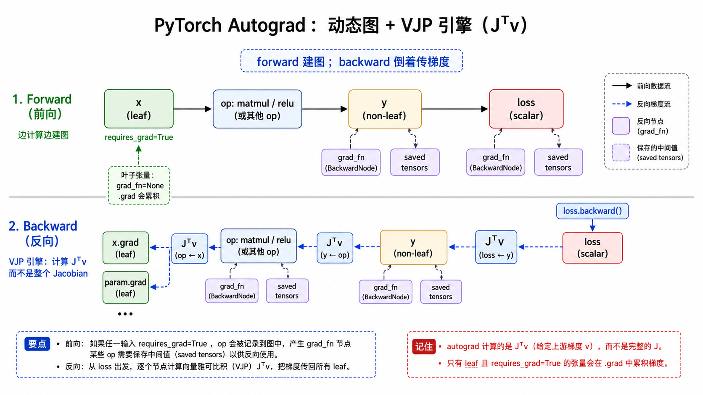
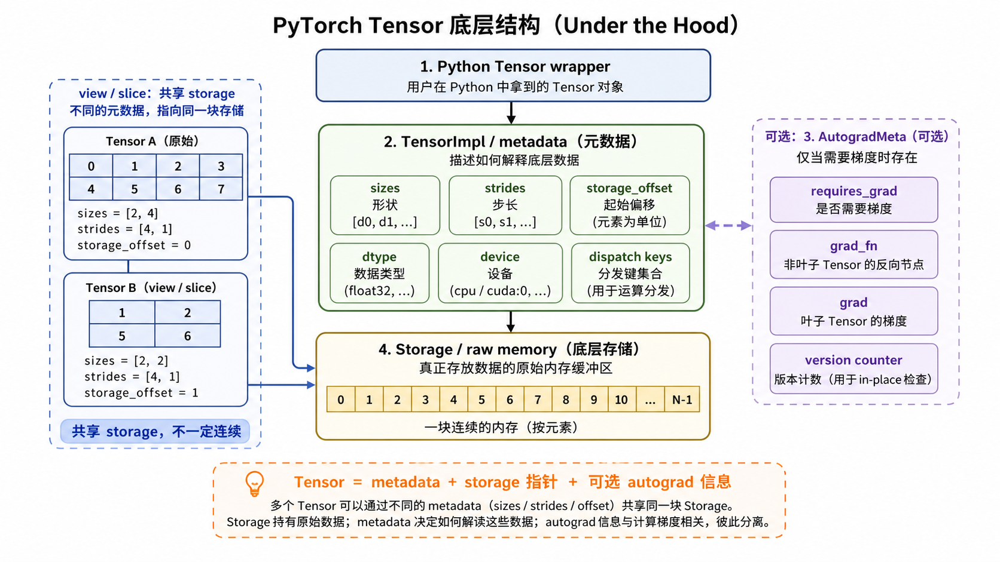
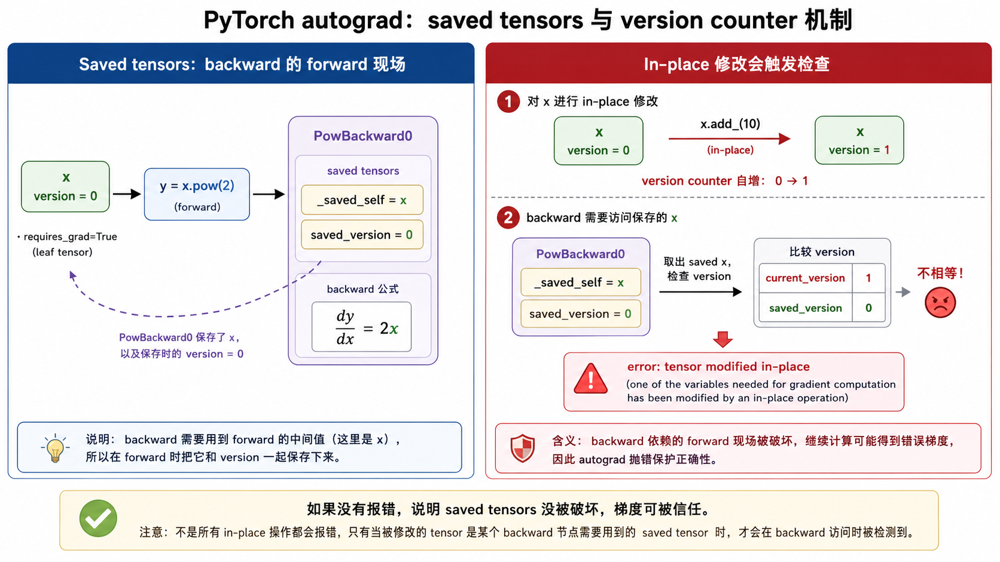
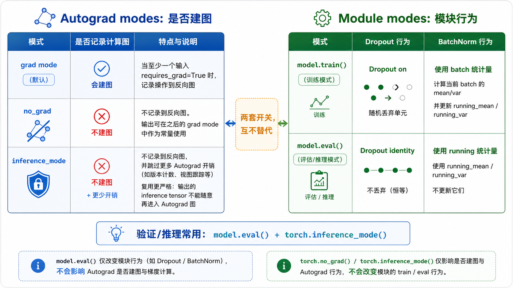

一张总图
最短的 mental model 是：forward 时动态建图，backward 时从 loss 的 grad_fn 出发，沿着 backward node 倒着做 VJP，把梯度累积到 leaf tensor 的 .grad。

J^T v。数据不是只在 Python 对象里；Tensor 主要由 metadata、Storage 指针和可选 autograd 信息组成。
只要 grad mode 开启，且至少一个输入 requires_grad=True，相关 op 就会被记录进反向图。
非 leaf tensor 负责传梯度，leaf tensor 负责默认接收并累积 .grad。
Tensor 底层：metadata + storage + autograd 信息
Tensor 更像一个带解释方式的句柄。真正的内存通常在 Storage 里；sizes、strides、storage_offset 决定如何解释同一块内存。

关键点：view()、slice()、transpose() 等操作经常不复制数据。它们可能创建新的 Tensor wrapper / metadata，但仍然指向同一块底层 storage。
Autograd 算的是 VJP，不是完整 Jacobian
如果 y = f(x)，其中 x 是 n 维、y 是 m 维，那么数学上的 Jacobian 是一个 m x n 矩阵。但训练时我们更关心的是标量 loss 对参数的梯度。
d loss / d x = J^T @ v, 其中 v = d loss / d y
v 不是 loss 本身，而是从后面传回来的 upstream gradient。对标量 loss 调用 loss.backward() 时，起点就是 d loss / d loss = 1。
x = torch.tensor([2., 3.], requires_grad=True)
y = x ** 2
# 等价于 loss = 0.1 * y[0] + 2.0 * y[1]
y.backward(torch.tensor([0.1, 2.0]))
print(x.grad) # tensor([0.4, 12.0])requires_grad、leaf、grad_fn、.grad
requires_grad
这是 Tensor 上的梯度开关。forward 时，只有在 grad mode 开启并且至少一个输入需要梯度时，op 才会被记录进 backward graph。
x = torch.randn(3, requires_grad=True)
w = torch.randn(3, requires_grad=False)
y = x * w
print(y.requires_grad) # True
print(y.grad_fn) # MulBackward0leaf tensor
leaf tensor 通常是用户直接创建的 Tensor 或 nn.Parameter。它没有 grad_fn，backward 后默认把梯度累积到 .grad。
x = torch.randn(3, requires_grad=True)
print(x.is_leaf) # True
print(x.grad_fn) # None| 概念 | 在哪里 | 作用 |
|---|---|---|
grad_fn |
非 leaf tensor 上 | 指向产生这个 tensor 的 backward node，例如 MulBackward0、ReluBackward0。 |
.grad |
默认只保存在 leaf tensor 上 | 保存 d loss / d tensor，并且会累积，所以训练循环需要 zero_grad()。 |
retain_grad() |
non-leaf tensor 上可调用 | 让中间 tensor 也把梯度保存在 .grad，主要用于调试。 |
x = torch.tensor(2.0, requires_grad=True)
a = x * 3
b = a.relu()
loss = b.sum()
print(a.grad_fn) # MulBackward0
print(b.grad_fn) # ReluBackward0
print(loss.grad_fn) # SumBackward0
loss.backward()
print(x.grad) # leaf tensor 默认保存梯度Saved tensors 与 version counter
某些 backward 公式需要 forward 时的值。例如 y = x.pow(2) 的梯度是 2x，所以 PowBackward0 要保存 forward 时的 x。

_saved_self / _saved_result 在哪
它们是 grad_fn 指向的 backward node 内部暴露出来的调试属性，不是 Tensor 的普通字段，也不在 Storage 里。
x = torch.randn(5, requires_grad=True)
y = x.pow(2)
print(y.grad_fn) # PowBackward0
print(y.grad_fn._saved_self) # backward 需要的 x为什么和 correctness 有关
如果 forward 保存的是 x = 2，但 backward 前被 in-place 改成 12，那么 2x 会算出错误梯度。version counter 负责发现这种破坏。
x = torch.tensor(2.0, requires_grad=True)
y = x ** 2
with torch.no_grad():
x.add_(10)
y.backward() # 可能报 in-place modification error注意：_saved_* 适合学习和调试，但不是业务代码应该依赖的稳定 API。不同 PyTorch 版本和不同 op 的内部保存策略可能变化。
no_grad、inference_mode、eval/train 是两套开关
torch.no_grad() 和 torch.inference_mode() 控制是否记录 autograd graph；model.train() / model.eval() 控制模块行为，例如 Dropout 和 BatchNorm。

model.eval() 加 torch.inference_mode()：一个管模块行为，一个管是否建图。| 模式 | 作用 | 典型用途 |
|---|---|---|
torch.no_grad() |
临时不记录 op 到 backward graph，但不修改输入 tensor 的 requires_grad。 |
优化器参数更新、初始化、某段不想建图但结果之后可能作为常量进入 grad mode 的计算。 |
torch.inference_mode() |
也不建图，并跳过更多 autograd 开销；更快，但产出的 inference tensor 后续复用限制更严格。 | 纯推理、验证、测试。 |
model.eval() |
Dropout 变 identity；BatchNorm 使用 running stats，不更新 running_mean/running_var。 | 验证和推理时避免随机 drop 和验证集污染 BatchNorm 统计量。 |
model.eval()
with torch.inference_mode():
logits = model(x_val)
model.train() # 如果后面继续训练，记得切回来自定义 autograd.Function 与 save_for_backward
自定义 Function 会被 autograd 当成一个原子 op。forward() 里的普通 PyTorch 操作默认不会继续展开成内部计算图，所以你必须自己实现 backward()。
class Square(torch.autograd.Function):
@staticmethod
def forward(ctx, x):
ctx.save_for_backward(x)
return x * x
@staticmethod
def backward(ctx, grad_out):
(x,) = ctx.saved_tensors
return grad_out * 2 * x规则：Tensor 用 ctx.save_for_backward() 保存；非 Tensor，比如 int、bool、string、shape 信息，可以直接挂在 ctx 上。
save_for_backward() 让 autograd 接管 saved tensors 的生命周期、version counter 检查、引用环规避，并支持 saved_tensors_hooks、activation checkpointing、offloading 等机制。直接写 ctx.x = x 会绕开这些管理，通常不推荐。
Review：容易混淆的点
v 是 d loss / d y，也就是当前节点收到的上游梯度。标量 loss 的 backward 起点才是 1。
model.eval() 不会关闭 autograd；它只改变 Dropout、BatchNorm 这类模块的运行行为。
no_grad 是 thread-local 的临时模式开关；出了 context，原来的 tensor 仍然可以参与建图。
grad_fn._saved_self、grad_fn._saved_result 是 backward node 暴露出来的内部保存槽位，适合调试，不适合业务依赖。
如果 backward 需要某个 saved tensor，而它在 backward 前被 in-place 改了，version counter 会触发错误，防止错误梯度被静默使用。
官方资料
后续可以顺着这些入口继续看官方解释和实现细节：
| 主题 | 链接 |
|---|---|
| 入门教程 | A Gentle Introduction to torch.autograd |
| 机制说明 | Autograd mechanics |
| 自定义 Function | Extending PyTorch |
| API 参考 | torch.autograd reference |